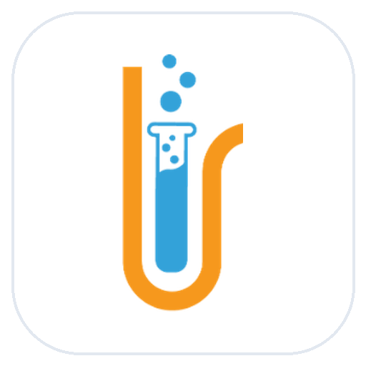

High-throughput multi-threaded SFTP synchronization, zero-knowledge AES-256-GCM credential vault, RFC 6238 TOTP Multi-Factor Authentication, and point-in-time disaster recovery.
Built with clean architecture, domain-driven boundaries, and zero-knowledge data protection.
Linux & Windows client servers running MySQL, MariaDB, PostgreSQL, and file directories. Zero agent binaries needed.
8 concurrent worker threads with thread-local SSH sessions download files at maximum line speed with pipefail streaming.
All database passwords, SSH keys, cloud tokens, and TOTP secrets are encrypted at rest with authenticated GCM tags.
Instant synchronization to Google Drive, Microsoft OneDrive, AWS S3 / Terabox, or local offline disk mirrors.
Replaced sequential downloads with Python’s ThreadPoolExecutor(max_workers=8) and thread-local SFTP channels. Over 60,000 files are staged and synced in minutes without remote server CPU spikes.
Full support for Google Authenticator and Microsoft Authenticator with 0 third-party C dependencies. Includes replay attack prevention (last_step_used) and 8 emergency single-use recovery codes.
Restore complete client states or selectively extract individual files or databases. Features automatic database recreation, permission preservation, and zero-downtime execution.
Dynamic token_version tracking in database and JWT claims. Password changes, MFA toggles, and logouts immediately invalidate all other active tokens across all devices.
Sliding-window IP and account rate limiter locks excessive failed login attempts for 15 minutes. Includes constant-time PBKDF2 dummy evaluation preventing user enumeration timing attacks.
15-minute client-side inactivity monitor detects keyboard, mouse, and touch events. Displays a 60-second warning countdown before automatically terminating unattended sessions.
Audited and defended against vulnerability classes documented by Cure53, NCC Group, and Trail of Bits.
Deploy TechLIMS on any modern Linux or Windows server in under 2 minutes.
Installs Python dependencies, provisions system user limsbackup, configures systemd service, and binds to port 8080.

OAuth 2.0 Client Identity & Data Transparency Statement
Application Backup by TechLIMS is an enterprise-grade automated disaster recovery platform that transfers scheduled, encrypted file archives and database dumps to user-authorized cloud storage providers, including Google Drive.
https://www.googleapis.com/auth/drive.file — Limited non-sensitive scope to create, upload, and update only the specific backup archive files and destination folders created by this application.